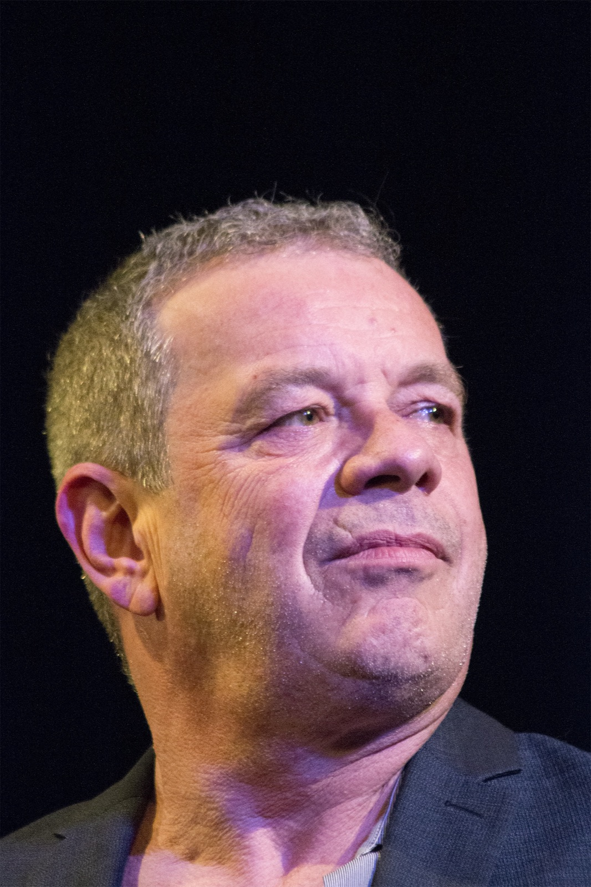
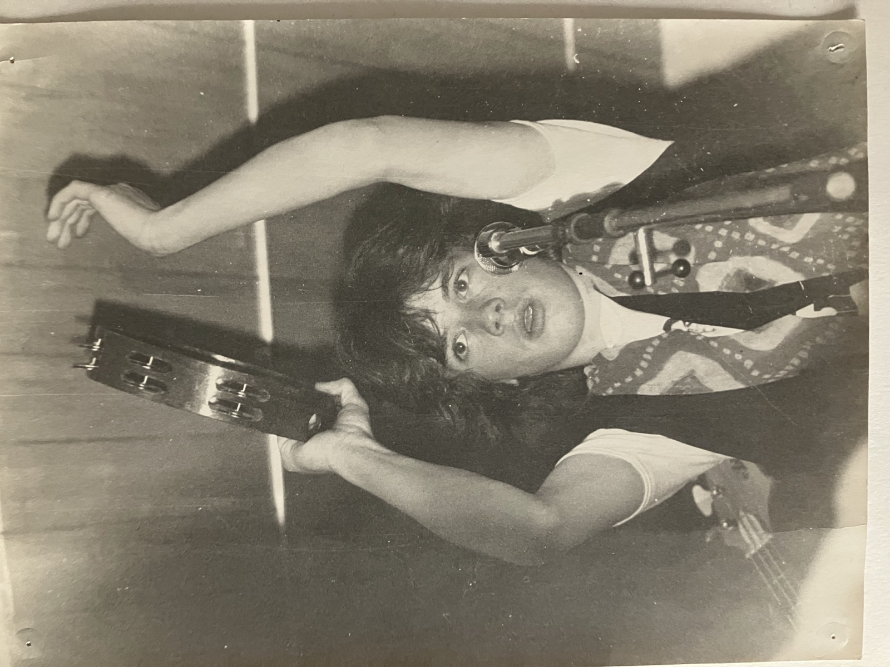
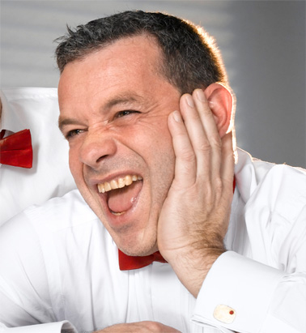
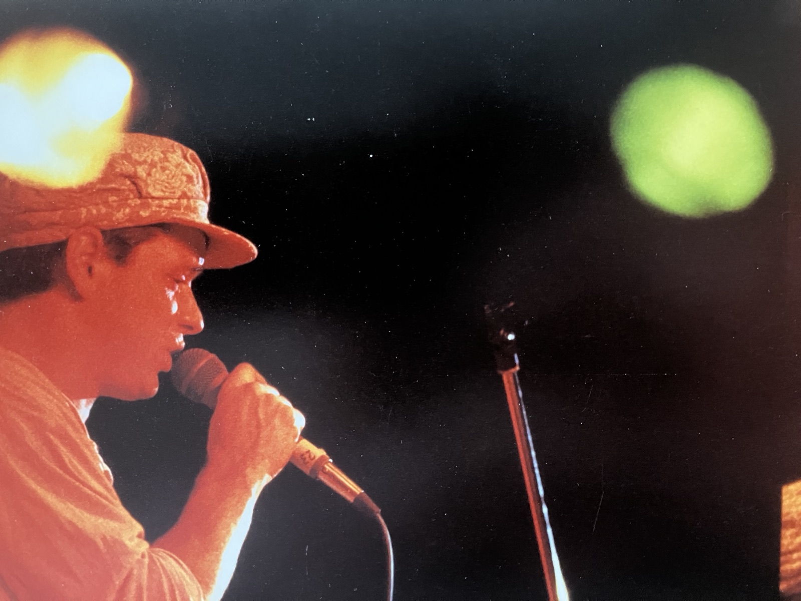

Pascal
Dussex
Sänger, Entertainer und Velomech. Soul mit zehn Mann, Swiss-Comedy zu zweit, Jazz im Anzug – und dazwischen ein Budeli mit Velos.

Live
-
26Sep 2026Soultrain ↗BielLe Singe · Anniversary
-
23Okt 2026Les trois Suisses ↗Wangen-BrüttisellenGasthof Sternen · «Beiz»
-
30Okt 2026Les trois Suisses ↗Hinwil-HadlikonAreal im Tobel · «Beiz»
-
31Okt 2026Soultrain ↗FrauenfeldEisenwerk · feat. Freda Goodlett
-
14Nov 2026Soultrain ↗Langnau i. E.Kupferschmiede · 40 Y. Paragraph
-
10Dez 2026True Blue ↗BernBreitschträff
-
19Feb 2027Les trois Suisses ↗Wald ZHReformierte Kirche · «Beiz»
-
26Feb 2027True Blue ↗Lörrach (DE)Jazztone
-
31Mär 2027Les trois Suisses ↗Schlieren ZHStürmeierhuus · «Beiz»
-
02Apr 2027Les trois Suisses ↗StaufenZopfhuus · «Beiz»
-
22Mai 2027Soultrain ↗ErlachErlach Festival · feat. Freda Goodlett
-
20Nov 2027True Blue ↗MühlethurnenAlti Moschti
Aktuell keine Termine für diese Band – schau auf der Band-Seite vorbei.
Weitere Termine folgen. Tickets über die jeweilige Band-Seite.
Bands
Drei Formationen, eine Stimme. Jede Band hat ihre eigene Seite – hier geht's hin.

Zehnköpfige Soul- & Funk-Truppe mit messerscharfem fünfköpfigem Bläsersatz. Aktuell auf Anniversary-Tour.

Drei Schweizer, rote Fliegen, viel Schalk. Das aktuelle Programm heisst «Beiz».

Seit über 30 Jahren in Originalbesetzung: funkiger Blues, swingender Jazz, französische Chansons. Neue CD «Stripes Is Our Favorite Color» (2024).
Zeitreise
Vom Buben mit dem Glacé zum Frontmann mit Bläsersatz. Ein halbes Jahrhundert in sechs Bildern.
Das Blaue Wunder
Velowerkstatt im Marzili, Bern. Rhythm u Byciclette für ds Gmüet – Rock 'n' Roll fürs Velo statt Blues. Ist etwas «broche, verheit oder verboge»? Termin abmachen und vorbeikommen.
- Service & KontrolleFrühling ideal
- Platten & Pneusoft sofort
- Bremsen & Schaltungeinstellen, ersetzen
- Occasionen & Trouvaillenaus Alt mach Neu
3005 Bern
Kontakt
Booking, Presse, ein kaputtes Velo oder einfach Hallo sagen.